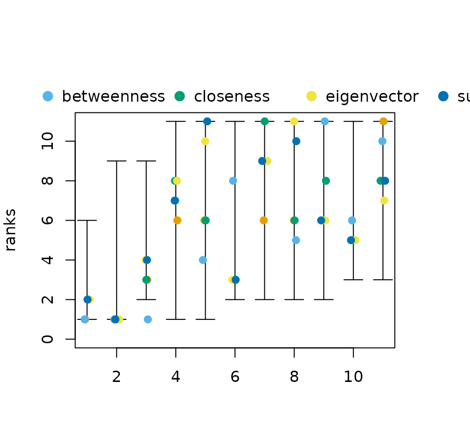

This vignette describes methods to analyse all possible centrality rankings of a network at once. To do so, a partial rankings as computed from neighborhood-inclusion or, more general, positional dominance is needed. In this vignette we focus on neighborhood-inclusion but note that all considered methods are readily applicable for positional dominance. For more examples consult the tutorial.
Theoretical Background
Neighborhood-inclusion or induces a partial ranking on the vertices
of a graph
.
We write
if
holds for two vertices
.
From the fact that
holds for any centrality index
,
we can characterize the set of all possible centrality based
node rankings. Namely as the set of rankings that extend the partial
ranking
“”
to a (complete) ranking.
A node ranking can be defined as a mapping
where we use the convention that
is the top ranked node if
and the bottom ranked one if
.
The set of all possible rankings can then be characterized as
This set contains all
rankings that could be obtained with a centrality index.
Once
is calculated, it can be used for a probabilistic assessment of
centrality, analyzing all possible rankings at once. Examples include
relative rank probabilities (How likely is it, that a node
is more central than another node
?)
or expected ranks (How central do we expect a node
to be).
It most be noted though, that deriving the set
quickly becomes infeasible for larger networks, and one has to resort to
approximation methods. These and more theoretical details can be found
in
Schoch, David. (2018). Centrality without Indices: Partial rankings and rank Probabilities in networks. Social Networks, 54, 50-60.(link)
Exact Probabilities in the netrankr Package
Before calculating any probabilities consider the following example graph and the rankings induced by various centrality indices, shown as rank intervals (consult this vignette for details).
data("dbces11")
g <- dbces11
#neighborhood inclusion
P <- g %>% neighborhood_inclusion(sparse = FALSE)
#without %>% operator:
# P <- neighborhood_inclusion(g)
cent_scores <- data.frame(
degree=degree(g),
betweenness=round(betweenness(g),4),
closeness=round(closeness(g),4),
eigenvector=round(eigen_centrality(g)$vector,4),
subgraph=round(subgraph_centrality(g),4))
plot(rank_intervals(P),cent_scores = cent_scores)
Notice how all five indices rank a different vertex as the most
central one.
In the following subsections the output of the function
exact_rank_prob() are described which may help to
circumvent the potential arbitrariness of index induced rankings. But
first, let us briefly look at all the return values.
res <- exact_rank_prob(P)
res## Number of possible centrality rankings: 739200
## Equivalence Classes (max. possible): 11 (11)
## - - - - - - - - - -
## Rank Probabilities (rows:nodes/cols:ranks)
## 1 2 3 4 5 6 7
## A 0.54545455 0.27272727 0.12121212 0.04545455 0.01298701 0.002164502 0.00000000
## B 0.27272727 0.21818182 0.16969697 0.12727273 0.09090909 0.060606061 0.03636364
## C 0.00000000 0.16363636 0.21818182 0.20909091 0.16883117 0.119047619 0.07272727
## D 0.00000000 0.02727273 0.05151515 0.07272727 0.09090909 0.106060606 0.11818182
## E 0.00000000 0.00000000 0.01818182 0.04545455 0.07532468 0.103463203 0.12727273
## F 0.00000000 0.05454545 0.08484848 0.10000000 0.10649351 0.108658009 0.10909091
## G 0.00000000 0.05454545 0.08484848 0.10000000 0.10649351 0.108658009 0.10909091
## H 0.00000000 0.02727273 0.05151515 0.07272727 0.09090909 0.106060606 0.11818182
## I 0.09090909 0.09090909 0.09090909 0.09090909 0.09090909 0.090909091 0.09090909
## J 0.09090909 0.09090909 0.09090909 0.09090909 0.09090909 0.090909091 0.09090909
## K 0.00000000 0.00000000 0.01818182 0.04545455 0.07532468 0.103463203 0.12727273
## 8 9 10 11
## A 0.00000000 0.000000000 0.00000000 0.00000000
## B 0.01818182 0.006060606 0.00000000 0.00000000
## C 0.03636364 0.012121212 0.00000000 0.00000000
## D 0.12727273 0.133333333 0.13636364 0.13636364
## E 0.14545455 0.157575758 0.16363636 0.16363636
## F 0.10909091 0.109090909 0.10909091 0.10909091
## G 0.10909091 0.109090909 0.10909091 0.10909091
## H 0.12727273 0.133333333 0.13636364 0.13636364
## I 0.09090909 0.090909091 0.09090909 0.09090909
## J 0.09090909 0.090909091 0.09090909 0.09090909
## K 0.14545455 0.157575758 0.16363636 0.16363636
## - - - - - - - - - -
## Relative Rank Probabilities (row ranked lower than col)
## A B C D E F G
## A 0.00000000 0.66666667 1.0000000 0.9523810 1.0000000 1.0000000 1.0000000
## B 0.33333333 0.00000000 0.6666667 1.0000000 0.9166667 0.8333333 0.8333333
## C 0.00000000 0.33333333 0.0000000 0.7976190 1.0000000 0.7500000 0.7500000
## D 0.04761905 0.00000000 0.2023810 0.0000000 0.5595238 0.4404762 0.4404762
## E 0.00000000 0.08333333 0.0000000 0.4404762 0.0000000 0.3750000 0.3750000
## F 0.00000000 0.16666667 0.2500000 0.5595238 0.6250000 0.0000000 0.5000000
## G 0.00000000 0.16666667 0.2500000 0.5595238 0.6250000 0.5000000 0.0000000
## H 0.04761905 0.00000000 0.2023810 0.5000000 0.5595238 0.4404762 0.4404762
## I 0.14285714 0.25000000 0.3571429 0.6250000 0.6785714 0.5714286 0.5714286
## J 0.14285714 0.25000000 0.3571429 0.6250000 0.6785714 0.5714286 0.5714286
## K 0.00000000 0.08333333 0.0000000 0.4404762 0.5000000 0.3750000 0.3750000
## H I J K
## A 0.9523810 0.8571429 0.8571429 1.0000000
## B 1.0000000 0.7500000 0.7500000 0.9166667
## C 0.7976190 0.6428571 0.6428571 1.0000000
## D 0.5000000 0.3750000 0.3750000 0.5595238
## E 0.4404762 0.3214286 0.3214286 0.5000000
## F 0.5595238 0.4285714 0.4285714 0.6250000
## G 0.5595238 0.4285714 0.4285714 0.6250000
## H 0.0000000 0.3750000 0.3750000 0.5595238
## I 0.6250000 0.0000000 0.5000000 0.6785714
## J 0.6250000 0.5000000 0.0000000 0.6785714
## K 0.4404762 0.3214286 0.3214286 0.0000000
## - - - - - - - - - -
## Expected Ranks (higher values are better)
## A B C D E F G H
## 1.714286 3.000000 4.285714 7.500000 8.142857 6.857143 6.857143 7.500000
## I J K
## 6.000000 6.000000 8.142857
## - - - - - - - - - -
## SD of Rank Probabilities
## A B C D E F G H
## 0.9583148 1.8973666 1.7249667 2.5396850 2.1599320 2.7217941 2.7217941 2.5396850
## I J K
## 3.1622777 3.1622777 2.1599320
## - - - - - - - - - -The function returns an object of type which contains the result of a full probabilistic rank analysis. The specific list entries are discussed in the following subsections.
Rank Probabilities
Instead of insisting on fixed ranks of nodes as given by indices, we
can use rank probabilities to assess the likelihood of certain
rank. Formally, rank probabilities are simply defined as
Rank probabilities are given by the
return value rank.prob of the
exact_rank_prob() function.
rp <- round(res$rank.prob,2)
rp## 1 2 3 4 5 6 7 8 9 10 11
## A 0.55 0.27 0.12 0.05 0.01 0.00 0.00 0.00 0.00 0.00 0.00
## B 0.27 0.22 0.17 0.13 0.09 0.06 0.04 0.02 0.01 0.00 0.00
## C 0.00 0.16 0.22 0.21 0.17 0.12 0.07 0.04 0.01 0.00 0.00
## D 0.00 0.03 0.05 0.07 0.09 0.11 0.12 0.13 0.13 0.14 0.14
## E 0.00 0.00 0.02 0.05 0.08 0.10 0.13 0.15 0.16 0.16 0.16
## F 0.00 0.05 0.08 0.10 0.11 0.11 0.11 0.11 0.11 0.11 0.11
## G 0.00 0.05 0.08 0.10 0.11 0.11 0.11 0.11 0.11 0.11 0.11
## H 0.00 0.03 0.05 0.07 0.09 0.11 0.12 0.13 0.13 0.14 0.14
## I 0.09 0.09 0.09 0.09 0.09 0.09 0.09 0.09 0.09 0.09 0.09
## J 0.09 0.09 0.09 0.09 0.09 0.09 0.09 0.09 0.09 0.09 0.09
## K 0.00 0.00 0.02 0.05 0.08 0.10 0.13 0.15 0.16 0.16 0.16Entries rp[u,k] correspond to
.
The most interesting probabilities are certainly
,
that is how likely is it for a node to be the most central.
rp[,11]## A B C D E F G H I J K
## 0.00 0.00 0.00 0.14 0.16 0.11 0.11 0.14 0.09 0.09 0.16Recall from the previous section that we found five indices that ranked and on top. The probability tell us now, how likely it is to find an index that rank these nodes on top. In this case, node has the highest probability to be the most central node.
Relative Rank Probabilities
In some cases, we might not necessarily be interested in a complete
ranking of nodes, but only in the relative position of a subset of
nodes. This idea leads to relative rank probabilities, that is
formally defined as
Relative rank probabilities are given
by the return value relative.rank of the
exact_rank_prob() function.
rrp <- round(res$relative.rank,2)
rrp## A B C D E F G H I J K
## A 0.00 0.67 1.00 0.95 1.00 1.00 1.00 0.95 0.86 0.86 1.00
## B 0.33 0.00 0.67 1.00 0.92 0.83 0.83 1.00 0.75 0.75 0.92
## C 0.00 0.33 0.00 0.80 1.00 0.75 0.75 0.80 0.64 0.64 1.00
## D 0.05 0.00 0.20 0.00 0.56 0.44 0.44 0.50 0.38 0.38 0.56
## E 0.00 0.08 0.00 0.44 0.00 0.38 0.38 0.44 0.32 0.32 0.50
## F 0.00 0.17 0.25 0.56 0.62 0.00 0.50 0.56 0.43 0.43 0.62
## G 0.00 0.17 0.25 0.56 0.62 0.50 0.00 0.56 0.43 0.43 0.62
## H 0.05 0.00 0.20 0.50 0.56 0.44 0.44 0.00 0.38 0.38 0.56
## I 0.14 0.25 0.36 0.62 0.68 0.57 0.57 0.62 0.00 0.50 0.68
## J 0.14 0.25 0.36 0.62 0.68 0.57 0.57 0.62 0.50 0.00 0.68
## K 0.00 0.08 0.00 0.44 0.50 0.37 0.37 0.44 0.32 0.32 0.00Entries rrp[u,v] correspond to
.
The more a value rrp[u,v] deviates from
towards
,
the more confidence we gain that a node
is more central than a node
.
###Expected Ranks The expected rank of a node in centrality
rankings is defined as the expected value of the rank probability
distribution. That is,
Expected ranks are given by the return
value expected.rank of the exact_rank_prob()
function.
ex_rk <- round(res$expected.rank,2)
ex_rk## A B C D E F G H I J K
## 1.71 3.00 4.29 7.50 8.14 6.86 6.86 7.50 6.00 6.00 8.14As a reminder, the higher the numeric rank, the more central a node is. In this case, node has the highest expected rank in any centrality ranking.